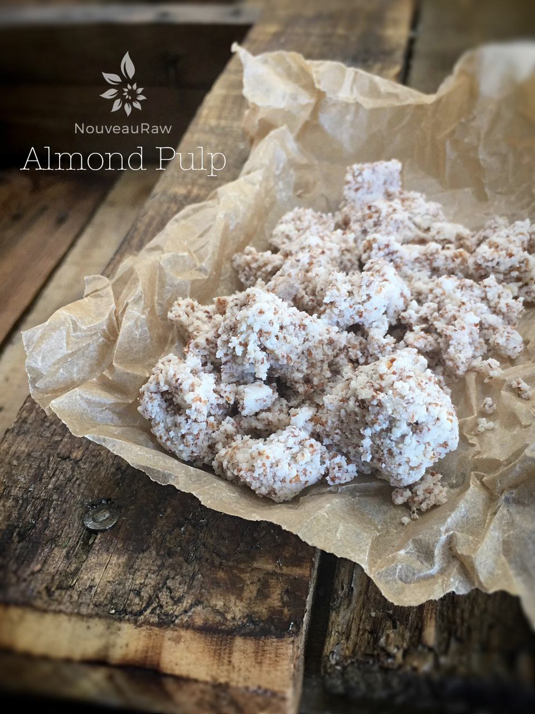
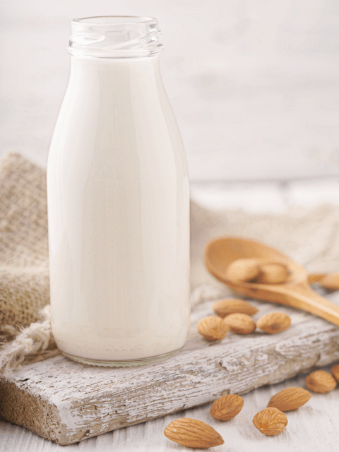
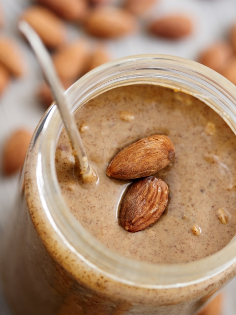

Almonds, Soaking and Drying
Soaked almonds are often referred to as; soaked almonds sprouted almonds or activated almonds. There is an important reason why we go through this process… Nuts have enzyme inhibitors that prevent them from germinating in dry conditions. They also contain phytic acid, which can make it very difficult for our bodies to digest them. Once soaked, they begin to sprout, which unlocks their nutrients and makes them much better for digesting.

Soaking almonds not only helps with digestion, but it enhances their flavor tremendously! They are slightly crispy, have a nice light and airy texture.
Below, I am sharing with you two drying techniques. The first one uses a dehydrator with the temperature set at 115 degrees (F), which will keep the nuts raw, making it optimal for absorbing all the nutrients that they have to offer.
The second technique is roasting them in the oven, which wouldn’t be my method of choice because the nuts won’t be raw any longer, and some nutrients will be lost, but I realize that not everybody owns a dehydrator. BUT I would rather you go through the soaking process and roasting them rather than eating them raw or commercially roasted (which haven’t been soaked before roasting). The measurements below are just for a guideline.
Do they have to be dehydrated?
If you are unable to dry the almonds, only soak an amount that you can be sure to use within two or three days. For convenience, I like to soak them in mason jars in the fridge. Rinse them every 12 hours, putting fresh water back in each time. You want to use them within a few days because, as with any live food, mold tends to set in within days if you’re not careful.

Why must we go through all this trouble? I find soaking nuts a significant step when it comes to my digestion. When nuts/seeds are soaked and/or sprouted in water, the germination process begins, in which the active and readily available amounts of enzymes, vitamins, minerals, proteins, and essential fatty acids begin to be activated.
Nuts and seeds contain phytic acid and enzyme inhibitors, which make it quite hard on the stomach and digestion. This simple process can make all the difference in how you feel after consuming them and how your body assimilates them. The salt helps activate enzymes that de-activate the enzyme inhibitors. To read more about the importance of why our bodies benefit from soaking nuts and seeds, click (
here).
 Ingredients:
Ingredients:
- 4 cups raw almonds, shelled
- 1 Tbsp Himalayan pink salt
- 8 cups water
Preparation:
Dehydrator method:
- Place the almonds and salt in a large bowl along with 8 cups of water.
- The almonds will swell during the soaking process, so you want enough water to keep them covered.
- Salt is necessary to help neutralize the enzymes.
- Leave them on the counter for 8-12 hours. Cover with a clean cloth and lay it over the bowl, this allows the contents of the bowl to breathe.
- Cover with a clean cloth and lay it over the bowl, this allows the contents of the bowl to breathe.
- It’s a good idea to change the water every 4-8 hours.
- After they are done soaking, drain them in a colander and rinse them thoroughly.
- Note ~ you can use and eat the soaked almonds as they are without drying them.
- Some recipes use wet or dry almonds.
- Spread the almonds on the mesh sheet that comes with the dehydrator.
- Keep them in a single layer and dry them at 115 degrees (F) until they are thoroughly dry and crisp.
- Make sure they are completely dry. If not, they could mold, plus they won’t have that crunchy, yummy texture you expect from nuts and seeds.
- The dry time will vary due to the machine you own, the type of climate you live in, and how full your dehydrator is when drying them. Expect anywhere from 12 + hours.
- Allow them to cool to room temperature before storing. As they cool, they will make a popping sound which can be entertaining for young ones.
- Store in airtight containers such as mason jars.
- If you plan on using them within 3 months, you can store them in the fridge.
- Anything longer, store in the freezer.
- I like to do a lot of nuts and seeds in a big batch to save time and energy when using my dehydrator. This way, I always have adequately prepared nuts and seeds on hand for snacks, salads, and recipes.
Oven method:
- Preheat the oven to 350 degrees (F).
- Spread the almonds on an ungreased cookie sheet in a single layer.
- Bake for 10-12 minutes. Don’t leave them unattended, due to their high oil content; they will continue to roast after you remove them from the oven. When toasted correctly, they taste toasted, not bitter or burnt.
- Cool for about 1 hour. Make sure that they are cool before storing them.
- Note ~ you can also slow roast the almonds by setting your oven to the lowest setting, adjust the roast time accordingly. You can even attempt to dry the almonds in the oven and keep them raw, but this is tricky. You will need to set the oven on the lowest setting, keep the door ajar and hang a thermometer in the oven to watch the temperature. Nothing is impossible. With this method… good luck and do your best. :)
Want to learn more about using almond in raw dishes? Here are some basics.
Learn how to make Almond flour (made from whole almonds)
Soaking & dehydrating is required
Learn how to make Almond flour (made from almond pulp) This flour is lighter in texture.
Soaking, making nut milk, and dehydration is required.
Never heard of almond pulp? Click (here) to learn about it.
Soaking & dehydrating required.

Learn how to make pure white almond flour by removing the skins. Click (here).
Soaking, skin removal & dehydrating is required.

Want to make your own almond milk? Easy! Here is a basic recipe for making nut milk.
Soaking required.

Make almond milk with a cheese press. (good for those with weakened hand strength)
Soaking required.

Make almond milk that doesn’t separate; Homogenized Almond Milk
Soaking required.

Want to make your own raw almond butter?
Soaking & dehydrating required.

Why are almonds used in raw recipes? For many reasons, actually. Nutrient-wise, they are a good source of protein, fiber, and omega 3 & 6’s. Textually, they act as a filler/flour (as shown above) in many cookie, bar, and cake recipes. Flavor-wise, they have a light, delicate taste with a hint of sweetness. This makes for a nice recipe base when you don’t want much-added flavor from it added to all the other flavors going on in a recipe. To find recipes that use almonds, type the word almonds in the search box located on the left menu bar.